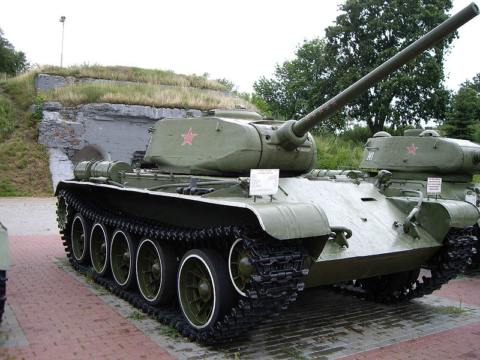

<div class="card">
    
    <div class="card-body">
        <h5 class="card-title">T-44 - Neuvostoliittolainen keskiraskas panssarivaunu</h5>
        <p class="card-text">
            T-44 on vaikea tuhota yläpanssarilaatasta joten kannattaa tähdätä tykkitornin poskiin, jossa panssari on ohuempaa.
        </p>
        <p class="card-text">
            T-44 on nopea, hyvin panssaroitu mutta huonolla kanuunalla varustettu omaan liigaansa nähden. Siksi T-44 yleensä
            toimii hyökkäysvaununa puskien objektiiveille ja kiertäen vihollisen selkään, jossa sen on helpompi ampua vihollista
            kylkeen ja lähitaiselussa päästä etupanssarista läpi.
        </p>
        <p class="card-text">
                T-44 on helppo tuhota pitkän kantaman taistelussa koska tämän kanuuna ei välttämättä pääse
                panssaristasi lävitse, jolloin voit rauhassa tähdätä tykkitornin poskiin.
        </p>
        <a href="http://wiki.warthunder.com/index.php?title=T-44" class="btn btn-link">T-44 War Thunderin Wikissä</a>
    </div>
</div>